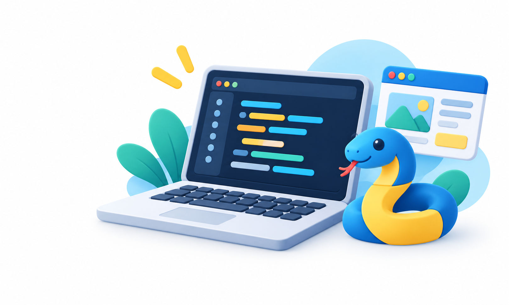

Програмування
Усі курси можна проходити онлайн — без встановлення середовищ, зі смартфона або планшета.

Python Emoji — Перші кроки
Яскраві пригоди з Python: смайлики, перші програми, ігри та малювання черепашкою. Пишіть і запускайте код просто в браузері.
Python Start
Перші кроки: знайомтеся з Python, запускайте код у браузері та крок за кроком створюйте свої перші програми.
Текстові ігри Python
Вісім практичних кроків від задуму до власної текстової гри. Створюйте історії, додавайте вибір, випадковість та ігровий цикл і перевіряйте код у браузері.
Черепаха-дослідник
Шість дослідницьких місій із Python Turtle для 6–8 класів. Малюйте кодом, поєднуйте знання з різних предметів і створюйте власні проєкти у браузері.
Цифрова майстерня: Turtle + Math + Art
Поєднуйте Python, математику й мистецтво в шести творчих темах. Досліджуйте геометричні композиції, фрактали та оптичні ілюзії за допомогою коду.
PyGame Zero: від фігур до власної гри
10 інтерактивних уроків: графіка, анімація, керування та ігрові проєкти у браузері.
Python від ідеї до проєкту
Для тих, хто вже знає основи Python: поглиблюйте знання, розв’язуйте практичні задачі та створюйте власні проєкти — від задуму до результату.
Зробимо сайт?
HTML, CSS та JavaScript: створюйте структуру вебсторінки, налаштовуйте її вигляд і додавайте взаємодію.
Технологія програмування
Порівнюйте три мови програмування, досліджуйте спільні принципи та практикуйте структурне програмування на прикладах.
Об’єктно-орієнтоване програмування
Досліджуйте об’єкти, їхні властивості та взаємодію в програмах і житті на прикладах трьох мов програмування.
Нічого не знайдено. Спробуйте інше слово.